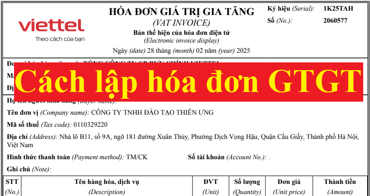

Hướng dẫn cách lập hóa đơn giá trị gia tăng còn gọi là hóa đơn GTGT, hóa đơn điện tử khi bán hàng hóa, dịch vụ, xây dựng, xây lắp…Cách viết các chỉ tiêu trên hóa đơn như ngày tháng năm, tên hàng hóa, đơn vị tính …theo Thông tư 32/2025/TT-BTC cùng với Nghị định 70/2025/NĐ-CP bổ sung, sửa đổi Nghị định 123/2020/NĐ-CP.
Theo điều 4 Nghị định 123/2020/NĐ-CP có quy định:
Chi tiết xem thêm: Nguyên tắc lập hóa đơn giá trị gia tăng
-----------------------------------------------------------------------------------------
Sau đây Công ty TNHH Tư vấn & Đào tạo Diệu Tâm xin hướng dẫn cách lập hóa đơn GTGT khi bán hàng hóa, dịch vụ:
1. Cách ghi Ngày tháng năm trên hóa đơn GTGT:
Theo khoản 6 điều 1 của Nghị định 70/2025/NĐ-CP => Sửa đổi, bổ sung khoản 1, khoản 2, điểm a, điểm e, điểm l, điểm m, điểm n khoản 4 Điều 9 và bổ sung điểm p, điểm q, điểm r vào khoản 4 Điều 9 của Nghị định số 123/2020/NĐ-CP (ban hành ngày 19 tháng 10 năm 2020) => thì quy định về thời điểm lập hóa đơn cụ thế như sau:
“1. Thời điểm lập hóa đơn đối với bán hàng hóa (bao gồm cả bán, chuyển nhượng tài sản công và bán hàng dự trữ quốc gia) là thời điểm chuyển giao quyền sở hữu hoặc quyền sử dụng hàng hóa cho người mua, không phân biệt đã thu được tiền hay chưa thu được tiền.
Đối với xuất khẩu hàng hóa (bao gồm cả gia công xuất khẩu), thời điểm lập hóa đơn thương mại điện tử, hóa đơn giá trị gia tăng điện tử hoặc hóa đơn bán hàng điện tử do người bán tự xác định nhưng chậm nhất không quá ngày làm việc tiếp theo kể từ ngày hàng hóa được thông quan theo quy định pháp luật về hải quan.
2. Thời điểm lập hóa đơn đối với cung cấp dịch vụ là thời điểm hoàn thành việc cung cấp dịch vụ (bao gồm cả cung cấp dịch vụ cho tổ chức, cá nhân nước ngoài) không phân biệt đã thu được tiền hay chưa thu được tiền. Trường hợp người cung cấp dịch vụ có thu tiền trước hoặc trong khi cung cấp dịch vụ thì thời điểm lập hóa đơn là thời điểm thu tiền (không bao gồm trường hợp thu tiền đặt cọc hoặc tạm ứng để đảm bảo thực hiện hợp đồng cung cấp các dịch vụ: Kế toán, kiểm toán, tư vấn tài chính, thuế; thẩm định giá; khảo sát, thiết kế kỹ thuật; tư vấn giám sát; lập dự án đầu tư xây dựng).”
3. Trường hợp giao hàng nhiều lần hoặc bàn giao từng hạng mục, công đoạn dịch vụ thì mỗi lần giao hàng hoặc bàn giao đều phải lập hóa đơn cho khối lượng, giá trị hàng hóa, dịch vụ được giao tương ứng.
4. Thời điểm lập hóa đơn đối với một số trường hợp cụ thể như sau:
“a) Đối với các trường hợp bán hàng hóa, cung cấp dịch vụ với số lượng lớn, phát sinh thường xuyên, cần có thời gian đối soát số liệu giữa doanh nghiệp bán hàng hóa, cung cấp dịch vụ và khách hàng, đối tác gồm:
Trường hợp cung cấp dịch vụ hỗ trợ trực tiếp cho vận tải hàng không, cung ứng nhiên liệu hàng không cho các hãng hàng không, hoạt động cung cấp điện (trừ đối tượng quy định tại điểm h khoản này), cung cấp dịch vụ hỗ trợ vận tải đường sắt, nước, dịch vụ truyền hình, dịch vụ quảng cáo truyền hình, dịch vụ thương mại điện tử, dịch vụ bưu chính và chuyển phát (bao gồm cả dịch vụ đại lý, dịch vụ thu hộ, chi hộ), dịch vụ viễn thông (bao gồm cả dịch vụ viễn thông giá trị gia tăng), dịch vụ logistic, dịch vụ công nghệ thông tin (trừ trường hợp quy định tại điểm b khoản này) được bán theo kỳ nhất định, dịch vụ ngân hàng (trừ hoạt động cho vay), chuyển tiền quốc tế, dịch vụ chứng khoán, xổ số điện toán, thu phí sử dụng đường bộ giữa nhà đầu tư và nhà cung cấp dịch vụ thu phí và các trường hợp khác theo hướng dẫn của Bộ trưởng Bộ Tài chính, thời điểm lập hóa đơn là thời điểm hoàn thành việc đối soát dữ liệu giữa các bên nhưng chậm nhất không quá ngày 07 của tháng sau tháng phát sinh việc cung cấp dịch vụ hoặc không quá 07 ngày kể từ ngày kết thúc kỳ quy ước. Kỳ quy ước để làm căn cứ tính lượng hàng hóa, dịch vụ cung cấp căn cứ thỏa thuận giữa đơn vị bán hàng hóa, cung cấp dịch vụ với người mua.”
b) Đối với dịch vụ viễn thông (bao gồm cả dịch vụ viễn thông giá trị gia tăng), dịch vụ công nghệ thông tin (bao gồm dịch vụ trung gian thanh toán sử dụng trên nền tảng viễn thông, công nghệ thông tin) phải thực hiện đối soát dữ liệu kết nối giữa các cơ sở kinh doanh dịch vụ, thời điểm lập hóa đơn là thời điểm hoàn thành việc đối soát dữ liệu về cước dịch vụ theo hợp đồng kinh tế giữa các cơ sở kinh doanh dịch vụ nhưng chậm nhất không quá 2 tháng kể từ tháng phát sinh cước dịch vụ kết nối.
Trường hợp cung cấp dịch vụ viễn thông (bao gồm cả dịch vụ viễn thông giá trị gia tăng) thông qua bán thẻ trả trước, thu cước phí hòa mạng khi khách hàng đăng ký sử dụng dịch vụ mà khách hàng không yêu cầu xuất hóa đơn GTGT hoặc không cung cấp tên, địa chỉ, mã số thuế thì cuối mỗi ngày hoặc định kỳ trong tháng, cơ sở kinh doanh dịch vụ lập chung một hóa đơn GTGT ghi nhận tổng doanh thu phát sinh theo từng dịch vụ người mua không lấy hóa đơn hoặc không cung cấp tên, địa chỉ, mã số thuế.
c) Đối với hoạt động xây dựng, lắp đặt, thời điểm lập hóa đơn là thời điểm nghiệm thu, bàn giao công trình, hạng mục công trình, khối lượng xây dựng, lắp đặt hoàn thành, không phân biệt đã thu được tiền hay chưa thu được tiền.
d) Đối với tổ chức kinh doanh bất động sản, xây dựng cơ sở hạ tầng, xây dựng nhà để bán, chuyển nhượng:
d.1) Trường hợp chưa chuyển giao quyền sở hữu, quyền sử dụng: Có thực hiện thu tiền theo tiến độ thực hiện dự án hoặc tiến độ thu tiền ghi trong hợp đồng thì thời điểm lập hóa đơn là ngày thu tiền hoặc theo thỏa thuận thanh toán trong hợp đồng.
d.2) Trường hợp đã chuyển giao quyền sở hữu, quyền sử dụng: Thời điểm lập hóa đơn thực hiện theo quy định tại khoản 1 Điều này.
đ) Thời điểm lập hóa đơn đối với các trường hợp tổ chức kinh doanh mua dịch vụ vận tải hàng không xuất qua website và hệ thống thương mại điện tử được lập theo thông lệ quốc tế chậm nhất không quá 05 ngày kế tiếp kể từ ngày chứng từ dich vụ vận tải hàng không xuất ra trên hệ thống website và hệ thống thương mại điện tử.
“e) Đối với hoạt động tìm kiếm thăm dò, khai thác và chế biến dầu thô: Thời điểm lập hóa đơn bán dầu thô, condensate, các sản phẩm được chế biến từ dầu thô (bao gồm cả hoạt động bao tiêu sản phẩm theo cam kết của Chính phủ) là thời điểm bên mua và bên bán xác định được giá bán chính thức, không phân biệt đã thu được tiền hay chưa thu được tiền.
Đối với hoạt động bán khí thiên nhiên, khí đồng hành, khí than được chuyển bằng đường ống dẫn khí đến người mua, thời điểm lập hóa đơn là thời điểm bên mua, bên bán xác định khối lượng khí giao của tháng nhưng chậm nhất là ngày cuối cùng của thời hạn kê khai, nộp thuế đối với tháng phát sinh nghĩa vụ thuế theo quy định pháp luật về thuế.
Trường hợp thỏa thuận bảo lãnh và cam kết của Chính phủ có quy định khác về thời điểm lập hóa đơn thì thực hiện theo quy định tại thỏa thuận bảo lãnh và cam kết của Chính phủ.”
h) Đối với hoạt động bán điện của các công ty phát điện trên thị trường điện thì thời điểm lập hóa đơn điện tử được xác định căn cứ thời điểm về đối soát số liệu thanh toán giữa đơn vị vận hành hệ thống điện và thị trường điện, đơn vị phát điện và đơn vị mua điện theo quy định của Bộ Công Thương hoặc hợp đồng mua bán điện đã được Bộ Công Thương hướng dẫn, phê duyệt nhưng chậm nhất là ngày cuối cùng của thời hạn kê khai, nộp thuế đối với tháng phát sinh nghĩa vụ thuế theo quy định pháp luật về thuế.
Riêng hoạt động bán điện của các công ty phát điện có cam kết bảo lãnh của Chính phủ về thời điểm thanh toán thì thời điểm lập hóa đơn điện tử căn cứ theo bảo lãnh của Chính phủ, hướng dẫn và phê duyệt của Bộ Công Thương và các hợp đồng mua bán điện đã được ký kết giữa bên mua điện và bên bán điện.
i) Thời điểm lập hóa đơn điện tử đối với trường hợp bán xăng dầu tại các cửa hàng bán lẻ cho khách hàng là thời điểm kết thúc việc bán xăng dầu theo từng lần bán. Người bán phải đảm bảo lưu trữ đầy đủ hóa đơn điện tử đối với trường hợp bán xăng dầu cho khách hàng là cá nhân không kinh doanh, cá nhân kinh doanh và đảm bảo có thể tra cứu khi cơ quan có thẩm quyền yêu cầu.
k) Đối với trường hợp cung cấp dịch vụ vận tải hàng không, dịch vụ bảo hiểm qua đại lý, thời điểm lập hóa đơn là thời điểm hoàn thành việc đối soát dữ liệu giữa các bên nhưng chậm nhất không quá ngày 10 của tháng sau tháng phát sinh.
“l) Thời điểm lập hóa đơn đối với hoạt động cho vay được xác định theo kỳ hạn thu lãi tại hợp đồng tín dụng giữa tổ chức tín dụng và khách hàng đi vay (trừ trường hợp đến kỳ hạn thu lãi không thu được và tổ chức tín dụng theo dõi ngoại bảng theo quy định pháp luật về tín dụng) thì thời điểm lập hóa đơn là thời điểm thu được tiền lãi vay của khách hàng. Trường hợp trả lãi trước hạn theo hợp đồng tín dụng thì thời điểm lập hóa đơn là thời điểm thu lãi trước hạn.
Đối với hoạt động đại lý đổi ngoại tệ, hoạt động cung ứng dịch vụ nhận và chi, trả ngoại tệ của tổ chức kinh tế của tổ chức tín dụng, thời điểm lập hóa đơn là thời điểm đổi ngoại tệ, thời điểm hoàn thành dịch vụ nhận và chi trả ngoại tệ.
m) Đối với kinh doanh vận tải hành khách bằng xe taxi có sử dụng phần mềm tính tiền theo quy định của pháp luật: tại thời điểm kết thúc chuyến đi, doanh nghiệp, hợp tác xã kinh doanh vận tải hành khách bằng xe taxi có sử dụng phần mềm tính tiền thực hiện lập hóa đơn điện tử cho khách hàng đồng thời chuyển dữ liệu hóa đơn đến cơ quan thuế theo quy định.
n) Đối với cơ sở khám bệnh, chữa bệnh có sử dụng phần mềm quản lý khám chữa bệnh và quản lý viện phí, từng giao dịch khám, chữa bệnh và thực hiện các dịch vụ chụp, chiếu, xét nghiệm có in phiếu thu tiền (thu viện phí hoặc tiền khám, xét nghiệm) và có lưu trên hệ thống công nghệ thông tin, nếu khách hàng (người đến khám, chữa bệnh) không có nhu cầu lấy hóa đơn thì cuối ngày cơ sở khám bệnh, chữa bệnh căn cứ thông tin khám, chữa bệnh và thông tin từ phiếu thu tiền để tổng hợp lập hóa đơn điện tử cho các dịch vụ y tế thực hiện trong ngày, trường hợp khách hàng yêu cầu lập hóa đơn điện tử thì cơ sở khám bệnh, chữa bệnh lập hóa đơn điện tử giao cho khách hàng.
Cơ sở khám bệnh, chữa bệnh lập hóa đơn cho cơ quan bảo hiểm xã hội tại thời điểm được cơ quan bảo hiểm xã hội thanh, quyết toán chi phí khám chữa bệnh cho người có thẻ bảo hiểm y tế.”
o) Đối với hoạt động thu phí dịch vụ sử dụng đường bộ theo hình thức điện tử không dừng ngày lập hóa đơn điện tử là ngày xe lưu thông qua trạm thu phí.
Trường hợp khách hàng sử dụng dịch vụ thu phí đường bộ theo hình thức điện tử không dừng có một hoặc nhiều phương tiện cùng sử dụng dịch vụ nhiều lần trong tháng, đơn vị cung cấp dịch vụ có thể lập hóa đơn điện tử theo định kỳ, ngày lập hóa đơn điện tử chậm nhất là ngày cuối cùng của tháng phát sinh dịch vụ thu phí. Nội dung hóa đơn liệt kê chi tiết từng lượt xe lưu thông qua các trạm thu phí (bao gồm: thời gian xe qua trạm, giá phí sử dụng đường bộ của từng lượt xe).
“p) Thời điểm lập hóa đơn của hoạt động kinh doanh bảo hiểm là thời điểm ghi nhận doanh thu bảo hiểm theo quy định của pháp luật về kinh doanh bảo hiểm.
q) Đối với hoạt động kinh doanh vé xổ số truyền thống, xổ số biết kết quả ngay (vé xổ số) theo hình thức bán vé số in sẵn đủ mệnh giá cho khách hàng thì sau khi thu hồi vé xổ số không tiêu thụ hết và chậm nhất là trước khi mở thưởng của kỳ tiếp theo, doanh nghiệp kinh doanh xổ số lập 01 hóa đơn giá trị gia tăng điện tử có mã của cơ quan thuế cho từng đại lý là tổ chức, cá nhân cho vé xổ số được bán trong kỳ gửi cơ quan thuế cấp mã cho hóa đơn.
r) Đối với hoạt động kinh doanh casino và trò chơi điện tử có thưởng, thời điểm lập hóa đơn điện tử chậm nhất là 01 ngày kể từ thời điểm kết thúc ngày xác định doanh thu, đồng thời doanh nghiệp kinh doanh casino và trò chơi điện tử có thưởng chuyển dữ liệu ghi nhận số tiền thu được (do đổi đồng tiền quy ước cho người chơi tại quầy, tại bàn chơi và số tiền thu tại máy trò chơi điện tử có thưởng) trừ đi số tiền đổi trả cho người chơi (do người chơi trúng thưởng hoặc người chơi không sử dụng hết) theo Mẫu 01/TH-DT Phụ lục IA ban hành kèm theo Nghị định này đến cơ quan thuế cùng thời điểm chuyển dữ liệu hóa đơn điện tử. Ngày xác định doanh thu là khoảng thời gian từ 0 giờ 00 phút đến 23 giờ 59 phút cùng ngày.”
Lưu ý: Từ ngày 16/01/2026, tổ chức sẽ bị phạt cảnh cáo hoặc bị phạt tiền từ 500.000đ - 70.000.000đ đối với các hành vi xuất hóa đơn sai thời điểm (theo Nghị định 310/20285/NĐ-CP quy định về mức xử phạt đối với hành vi xuất hóa đơn sai thời điểm)
(Trước đó mức phạt về hóa đơn quy định tại Nghị định 125/2020/NĐ-CP áp dụng từ ngày 05 tháng 12 năm 2020)
---------------------------------------------------------------------------------
2. Thông tin người bán hàng: Không phải điền (vì đã được tạo sẵn khi khởi tạo hóa đơn điện tử)
---------------------------------------------------------------------------------
3. Cách ghi thông tin người mua hàng:
- Họ tên người mua hàng: Là người trực tiếp đến mua và giao dịch trực tiếp với công ty bán.
- Nếu người mua không lấy hóa đơn hoặc không cung cấp tên, địa chỉ, mã số thuế thì vẫn phải lập hóa đơn khi bán hàng hóa, cung cấp dịch vụ như bình thường.
- Tên Đơn vị: Là tên công ty của bên mua (Theo đúng trên giấy phép ĐKKD)
- Địa chỉ: Là địa chỉ công ty mua hàng (Theo đúng trên giấy phép ĐKKD)
Trường hợp tên, địa chỉ người mua quá dài, người bán được viết ngắn gọn một số danh từ thông dụng như: "Phường" thành "P", "Thành phố" thành "TP", "Việt Nam" thành "VN" hoặc "Cổ phần" là "CP", "Trách nhiệm Hữu hạn" thành "TNHH", "khu công nghiệp" thành "KCN", "sản xuất" thành "SX", "Chi nhánh" thành "CN"… nhưng vẫn đảm bảo đầy đủ số nhà, tên đường phố, phường, xã, quận, huyện, thành phố, xác định được chính xác tên, địa chỉ doanh nghiệp và phù hợp với đăng ký kinh doanh, đăng ký thuế của doanh nghiệp thì vẫn được xem là hợp pháp, được sử dụng để kê khai, khấu trừ thuế.
- Mã số thuế: Là MST đã được cấp theo giấy chứng nhận ĐKKD, đăng ký thuế.
Trường hợp người mua không có mã số thuế thì trên hóa đơn không phải thể hiện mã số thuế người mua. Một số trường hợp bán hàng hóa, cung cấp dịch vụ đặc thù cho người tiêu dùng là cá nhân quy định tại khoản 14 Điều 10 Nghị định 123/2020/NĐ-CP thì trên hóa đơn không phải thể hiện tên, địa chỉ người mua. Trường hợp bán hàng hóa, cung cấp dịch vụ cho khách hàng nước ngoài đến Việt Nam thì thông tin về địa chỉ người mua có thể được thay bằng thông tin về số hộ chiếu hoặc giấy tờ xuất nhập cảnh và quốc tịch của khách hàng nước ngoài.
Lưu ý: (theo điểm d khoản 7 điều 1 của Nghị định 70/2025/NĐ-CP sửa Sửa đổi, bổ sung điểm c và bổ sung điểm l vào khoản 14 Nghị định 123/2020/NĐ-CP)
"c) Đối với hóa đơn điện tử bán hàng tại siêu thị, trung tâm thương mại mà người mua là cá nhân không kinh doanh thì trên hóa đơn không nhất thiết phải có tên, địa chỉ, mã số thuế người mua, chữ ký số của người mua
Đối với hóa đơn điện tử bán xăng dầu cho khách hàng là cá nhân không kinh doanh thì không nhất thiết phải có các chỉ tiêu: Tên, địa chỉ, mã số thuế của người mua, chữ ký số của người mua.
“l) Đối với hóa đơn điện tử hoạt động kinh doanh casino, trò chơi điện tử có thưởng không nhất thiết phải có tên, địa chỉ, mã số thuế của người mua, chữ ký số của người mua.”
- Hình thức thanh toán:
-
Nếu thanh toán bằng tiền mặt: TM
-
Nếu thanh toán bằng chuyển khoản: CK
-
Nếu chưa xác định được hình thức thanh toán: Chọn TM/CK
-
Từ 01/07/2025 trở đi, Nếu Hóa đơn có giá trị từ 5.000.000 vnđ (đã bao gồm thuế GTGT) trở lên thì bắt buộc phải có chứng từ thanh toán không dùng tiền mặt thì mới được khấu trừ thuế GTGT và tính vào chi phí hợp lý của DN.
Lưu ý: Hiện này hầu hết các phần mềm hóa đơn điện tử để có thể lấy được thông tin trực tuyến. Bạn chỉ cần nhập Mã số thuế của đơn vị là các thông tin như tên Công ty, địa chỉ... sẽ tự động được lấy mà không cần phải nhập tay.
4. Cách ghi Bảng kê chi tiết hàng hóa bán ra:
- Cột Số thứ tự: Ghi lần lượt số thứ tự các loại hàng hóa mà người mua hàng đến mua.
- Cột Tên hàng hóa, dịch vụ: Ghi chi tiết, cụ thể tên hàng hóa mà mình bán ra (tên, mã, kí hiệu của hàng hóa).
(theo điểm a.1 khoản 7 của Nghị định 70/2025/NĐ-CP)
-
Trên hóa đơn phải thể hiện tên hàng hóa, dịch vụ bằng tiếng Việt. Trường hợp bán hàng hóa có nhiều chủng loại khác nhau thì tên hàng hóa thể hiện chi tiết đến từng chủng loại (ví dụ: Điện thoại Samsung, điện thoại Nokia; mặt hàng ăn, uống;...). Trường hợp hàng hóa phải đăng ký quyền sử dụng, quyền sở hữu thì trên hóa đơn phải thể hiện các số hiệu, ký hiệu đặc trưng của hàng hóa mà khi đăng ký pháp luật có yêu cầu. Ví dụ: Số khung, số máy của ô tô, mô tô, địa chỉ, cấp nhà, chiều dài, chiều rộng, số tầng của một ngôi nhà... Trường hợp kinh doanh dịch vụ vận tải thì trên hoá đơn phải thể hiện biển kiểm soát phương tiện vận tải, hành trình (điểm đi - điểm đến).
-
Đối với doanh nghiệp kinh doanh vận tải cung cấp dịch vụ vận tải hàng hóa trên nền tảng số, hoạt động thương mại điện tử thì phải thể hiện tên hàng hóa vận chuyển, thông tin tên, địa chỉ, mã số thuế hoặc số định danh người gửi hàng.
-
Trường hợp cần ghi thêm chữ nước ngoài thì chữ nước ngoài được đặt bên phải trong ngoặc đơn ( ) hoặc đặt ngay dưới dòng tiếng Việt và có cỡ chữ nhỏ hơn chữ tiếng Việt. Trường hợp hàng hóa, dịch vụ được giao dịch có quy định về mã hàng hóa, dịch vụ thì trên hóa đơn phải ghi cả tên và mã hàng hóa, dịch vụ.
Ví Dụ: máy Điều hòa LG JC12E, máy ĐH LG JC18D,
+) Nếu có quy định mã hàng hoá, dịch vụ để quản lý thì phải ghi cả mã hàng hoá và tên hàng hoá.
+) Các loại hàng hoá cần phải đăng ký quyền sử dụng, quyền sở hữu thì phải ghi trên hoá đơn các loại số hiệu, ký hiệu đặc trưng của hàng hoá mà khi đăng ký pháp luật có yêu cầu.
Ví dụ: số khung, số máy của ô tô, mô tô; địa chỉ, cấp nhà, chiều dài, chiều rộng, số tầng của ngôi nhà hoặc căn hộ…
+) Các trường hợp là hoá đơn điều chỉnh: Thì phải có dòng chữ “Điều chỉnh cho hóa đơn Mẫu số... ký hiệu... số... ngày... tháng... năm”.
Xem thêm: Cách viết hóa đơn điều chỉnh
- Đơn vị tính: Ghi rõ đơn vị tính của hàng hóa mà mình bán ra (cái, chiếc, m, bô, kg…)
(theo điểm a.2 khoản 7 của Nghị định 70/2025/NĐ-CP)
-
Người bán căn cứ vào tính chất, đặc điểm của hàng hóa để xác định tên đơn vị tính của hàng hóa thể hiện trên hóa đơn theo đơn vị tính là đơn vị đo lường (ví dụ như: Tấn, tạ, yến, kg, g, mg hoặc lượng, lạng, cái, con, chiếc, hộp, can, thùng, bao, gói, tuýp, m3, m2, m...).
-
Đối với dịch vụ thì trên hóa đơn không nhất thiết phải có tiêu thức “đơn vị tính” mà đơn vị tính xác định theo từng lần cung cấp dịch vụ và nội dung dịch vụ cung cấp.
- Số lượng (theo điểm a.3 khoản 7 của Nghị định 70/2025/NĐ-CP)
-
Người bán ghi số lượng bằng chữ số Ả-rập căn cứ theo đơn vị tính nêu trên.
-
Trường hợp cung cấp các loại hàng hóa, dịch vụ đặc thù như điện, nước, dịch vụ viễn thông, dịch vụ công nghệ thông tin, dịch vụ truyền hình, dịch vụ bưu chính và chuyển phát, ngân hàng, chứng khoán, bảo hiểm, được lập theo kỳ quy ước, dịch vụ khám bệnh, chữa bệnh và các trường hợp khác theo hướng dẫn của Bộ trưởng Bộ Tài chính được lập hóa đơn sau khi đối soát dữ liệu thì người bán được sử dụng bảng kê kèm theo hóa đơn; bảng kê được lưu giữ cùng hóa đơn để phục vụ việc kiểm tra, đối chiếu của các cơ quan có thẩm quyền.
-
Trường hợp khuyến mại hàng hóa, dịch vụ theo quy định của pháp luật về thương mại; cho, biếu, tặng hàng hóa, dịch vụ phù hợp với quy định pháp luật thì được lập hóa đơn tổng giá trị khuyến mại, cho, biếu, tặng kèm theo danh sách khuyến mại, cho, biếu, tặng. Tổ chức lưu giữ hồ sơ có liên quan về chương trình khuyến mại, cho, biếu, tặng và cung cấp khi cơ quan có thẩm quyền yêu cầu và phải chịu trách nhiệm về tính chính xác nội dung thông tin giao dịch và cung cấp bảng tổng hợp chi tiết hàng hóa, dịch vụ khi cơ quan có thẩm quyền yêu cầu. Trường hợp khách hàng yêu cầu lấy hóa đơn theo từng giao dịch thì người bán phải lập hóa đơn giao cho khách hàng.
-
Hóa đơn phải ghi rõ “kèm theo bảng kê số…, ngày... tháng... năm”. Bảng kê phải có tên, mã số thuế và địa chỉ của người bán, tên hàng hóa, dịch vụ, số lượng, đơn giá, thành tiền hàng hóa, dịch vụ bán ra, ngày lập, tên và chữ ký người lập bảng kê. Trường hợp người bán nộp thuế giá trị gia tăng theo phương pháp khấu trừ thì Bảng kê phải có tiêu thức “thuế suất thuế giá trị gia tăng” và “tiền thuế giá trị gia tăng”. Tổng cộng tiền thanh toán đúng với số tiền ghi trên hóa đơn giá trị gia tăng. Hàng hóa, dịch vụ bán ra ghi trên Bảng kê theo thứ tự bán hàng trong ngày. Bảng kê phải ghi rõ “kèm theo hóa đơn số...ngày... tháng... năm”.
- Đơn giá hàng hóa dịch vụ:
-
Người bán ghi đơn giá hàng hóa, dịch vụ theo đơn vị tính nêu trên. Trường hợp các hàng hóa, dịch vụ sử dụng bảng kê để liệt kê các hàng hóa, dịch vụ đã bán kèm theo hóa đơn thì trên hóa đơn không nhất thiết phải có đơn giá.
- Thành tiền: Là số tiền mà người mua phải trả bằng đơn giá nhân với số lương của loại hàng hóa đó.
5. Phần Tổng cộng:
- Cộng tiền hàng: Là tổng số tiền ở cột thành tiền .
- Thuế suất thuế GTGT: Ghi mức thuế suất của hàng hóa dịch vụ (hiện tại có 3 mức là: 0%, 5%, 10%,).
-
Nếu là hàng hoá, dịch vụ thuộc đối tượng không chịu thuế GTGT, được miễn thuế GTGT thì dòng thuế GTGT sẽ ghi KCT và dòng tiền thuế GTGT điền là 0
-
Nếu là hàng thuế suất 0% thì viết là "0"
- Tổng số tiền thanh toán trên hóa đơn: Là tổng cộng của dòng “Cộng tiền hàng” và “Tiền thuế GTGT”.
-
Trừ trường hợp bán hàng thu ngoại tệ không phải chuyển đổi ra đồng Việt Nam thì tổng số tiền thanh toán thể hiện bằng nguyên tệ và bằng chữ tiếng nước ngoài.
- Số tiền viết bằng chữ: Viết chính xác số tiền bằng chữ ở dòng “Tổng cộng tiền thanh toán”
Chú ý:
-
Việc nhân đơn giá, số lượng, thành tiền, tiền thuế, tổng thanh toán... sẽ được phần mềm tự tính, các bạn không cần phải nhập thủ công như viết hóa đơn giấy nữa.
-
Không được làm tròn số tiền lẻ trên hóa đơn GTGT.
VD: 5.456.890 không được làm tròn thành 5.457.000
Đồng tiền ghi trên hóa đơn là Đồng Việt Nam, ký hiệu quốc gia là “đ”.
Trường hợp nghiệp vụ kinh tế, tài chính phát sinh bằng ngoại tệ theo quy định của pháp luật về ngoại hối thì đơn giá, thành tiền, tổng số tiền thuế giá trị gia tăng theo từng loại thuế suất, tổng cộng tiền thuế giá trị gia tăng, tổng số tiền thanh toán được ghi bằng ngoại tệ, đơn vị tiền tệ ghi tên ngoại tệ. Người bán đồng thời thể hiện trên hóa đơn tỷ giá ngoại tệ với đồng Việt Nam theo tỷ giá theo quy định của Luật Quản lý thuế và các văn bản hướng dẫn thi hành.
Xem thêm: Trường hợp bán hàng được thu ngoại tệ
6. Chữ ký của Người bán - Người mua
- Đối với hóa đơn do cơ quan thuế đặt in, trên hóa đơn phải có chữ ký của người bán, dấu của người bán (nếu có), chữ ký của người mua (nếu có).
- Đối với hóa đơn điện tử:
-
Trường hợp người bán là doanh nghiệp, tổ chức thì chữ ký số của người bán trên hóa đơn là chữ ký số của doanh nghiệp, tổ chức; trường hợp người bán là cá nhân thì sử dụng chữ ký số của cá nhân hoặc người được ủy quyền.
-
Trường hợp hóa đơn điện tử không nhất thiết phải có chữ ký số của người bán và người mua (trường hợp này các bạn xem thêm tại khoản 14 điều 10 Nghị định 123/2020/NĐ-CP)
7. Thời điểm ký số trên hóa đơn
-
Thời điểm ký số trên hóa đơn điện tử là thời điểm người bán, người mua sử dụng chữ ký số để ký trên hóa đơn điện tử được hiển thị theo định dạng ngày, tháng, năm của năm dương lịch.
-
Trường hợp hóa đơn điện tử đã lập có thời điểm ký số trên hóa đơn khác thời điểm lập hóa đơn thì thời điểm ký số và thời điểm gửi cơ quan thuế cấp mã đối với hóa đơn có mã của cơ quan thuế hoặc thời điểm chuyển dữ liệu hóa đơn điện tử đến cơ quan thuế đối với hóa đơn điện tử không có mã của cơ quan thuế chậm nhất là ngày làm việc tiếp theo kể từ thời điểm lập hóa đơn (trừ trường hợp gửi dữ liệu theo bảng tổng hợp quy định tại điểm a.1 khoản 3 Điều 22 Nghị định 70/2025/NĐ-CP).
-
Người bán khai thuế theo thời điểm lập hóa đơn;
-
Thời điểm khai thuế đối với người mua là thời điểm nhận hóa đơn đảm bảo đúng, đầy đủ về hình thức và nội dung theo quy định tại Điều 10 Nghị định 70/2025/NĐ-CP.”
-
-------------------------------------------------------------------------------------
Nếu chẳng may có lập sai hóa đơn GTGT mời các bạn xem thêm: Cách xử lý khi viết sai hóa đơn giá trị gia tăng
------------------------------------------------------------------------------------------
